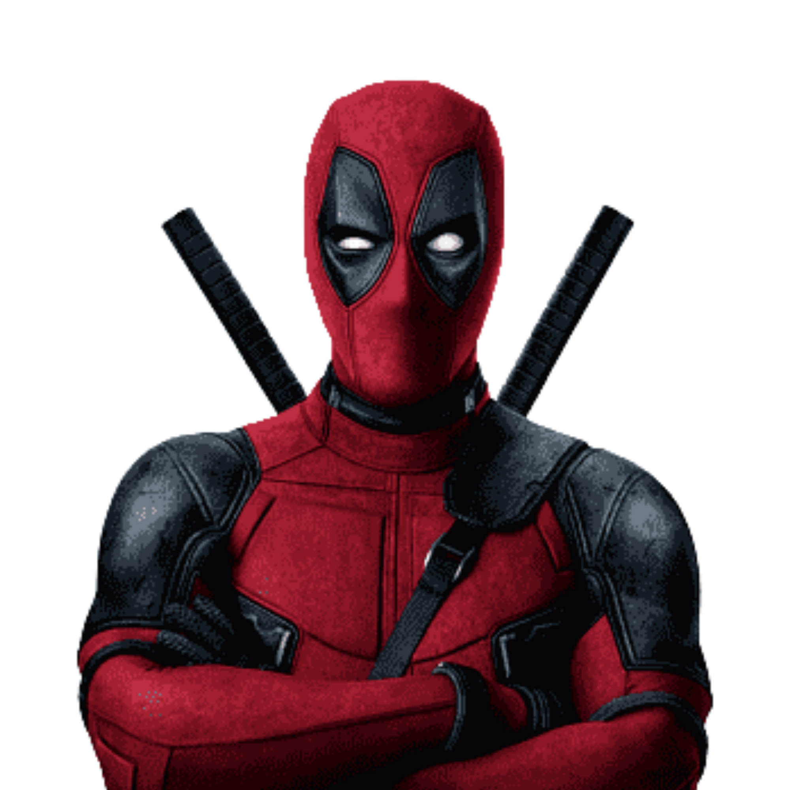

DEADPOOL
O mercenário que cansou de ficar preso nas páginas das revistas e veio invadir o CEEP.

Ei, psiu! Sou eu, o Deadpool. Fale comigo se tiver coragem!
Quem é esse cara de vermelho?
Wade Wilson é um ex-militar modificado geneticamente com um fator de cura que faz o Wolverine parecer uma piada. Ele sabe que é um personagem de ficção, quebra as regras do espaço-tempo e está prestes a responder suas mensagens em tempo real no chat.
Fique à vontade para explorar o site, testar o botão de mudar as cores e interagir com as minhas variantes.